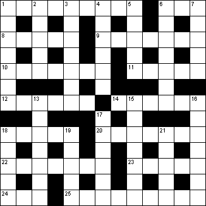

|
|
Daily Quick Crossword
14 August

|
Across 1 Underskirt (9)6 Dance (3) 8 Appear unexpectedly (3,2) 9 Consoled (7) 10 Give back (7) 11 Toy bear (5) 12 Vendor (6) 14 Not so fast (6) 18 Religious factions (5) 20 Unorthodox believer (7) 22 Irritated (7) 23 Phrase on a coat of arms (5) 24 Swindle (3) 25 The recent past (9) |
Down 1 Ancient writing material (7)2 Sorts, varieties (5) 3 Beseech (7) 4 Marine mollusc (6) 5 Available for renting (2,3) 6 Bird of the crow family (7) 7 Dizzy (5) 13 Reading desk (7) 15 Wyoming city (7) 16 Clergyman's house (7) 17 Sunglasses, colloquially (6) 18 Coins (anag) (5) 19 Foolish (5) 21 Carried (5) |
|
Copyright © 2020 Simply Daily Puzzles
|